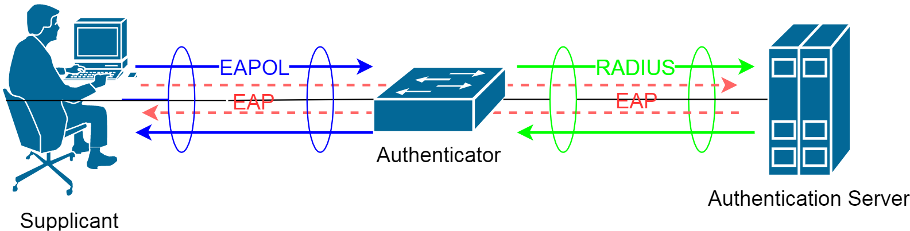

Authentication, Authorization and Accounting (AAA)
- Authentication: Who are you?
- Authorization: What do you have access to?
- Accounting: To generate logs.
Two network protocols providing this functionality are particularly popular. These are the RADIUS protocol (or its newer Diameter counterpart) and TACACS+ (Cisco proprietary).
- RADIUS: (UDP ports: auth, aut: 1812, 1645; Acc: 1813, 1646)
- Radius Server: provides authentication
- Radius Client (the switch): is not the one who is being authenticated; its job is to handle authentication request from supplicant
- Radius Supplicant (the user, a laptop, a PC): could be a laptop which will be authenticated
- TACACS+: Cisco proprietary (auth, aut, acc: TCP 49); good at managing a bunch of devices
- TACACS+ Server: provides authentication
- TACACS+ Client: to handle authentication request from user
- TACACS+ User: a laptop or a PC

There are many different RADIUS servers you can use, for example:
- Cisco ACS (Cisco’s RADIUS and TACACS+ server software)
- Microsoft IAS (you can install it on Windows server 2003 or 2008).
- Freeradius (very powerful and free)
- Integrated in network devices (Cisco’s Wireless LAN controller have RADIUS server software for example).
Local authentication
SW1(config)#aaa new-model SW1(config)#username test privilege 15 password test SW1(config)#aaa authentication login default local-case SW1(config)#aaa authentication login CONSOLE local SW1(config)#line console 0 SW1(config-line)#login authentication CONSOLE
Server-based authentication
SW1(config)#aaa new-model SW1(config)#aaa authentication login default group radius localThen for RADIUS:
SW1(config)#radius-server host 192.168.1.200 key testFor TACACS+:
SW1(config)#tacacs-server host 192.168.1.200 key test
SW1(config)#line console 0 SW1(config-line)#login authentication defaultTo test the authentication:
SW1#test aaa group radius admin P@ssw0rd legacy
IEEE 802.1X
Port-based Network Access Control (PNAC)
Scenario: If a PC is connected to a switch, first authenticate, then bring the port up/up.
- 802.1X also involves three parties:
- Authentication server: Host which supports the RADIUS and EAP
- Authenticator: Switch or wireless access point
- Supplicant (Client): The device is going to be connected to the switch or WAP
Using 802.1X authentication, the client provides credentials to the authenticator, which the authenticator forwards to the authentication server for verification. Note that the authenticator does not need to have a certificate or have any knowledge of the authentication method (PEAP, TLS, etc). The authentication is tunneled from the client to the authenticator over the RADIUS protocol.
For port-based authentication, both the switch and the end user’s PC must support the 802.1X standard, using the Extensible Authentication Protocol over LANs (EAPOL).
802.1X EAPOL is a Layer 2 protocol. At the point that a switch detects the presence of a device on a port, the port remains in the unauthorized state. Therefore, the client PC cannot communicate with anything other than the switch by using EAPOL. If the PC does not already have an IP address, it cannot request one. The PC also has no knowledge of the switch or its IP address, so any means other than a Layer 2 protocol is not possible. This is why the PC must also have an 802.1X-capable application or client software.
The idea behind AAA is that a user has to authenticate before getting access to the network. The fa0/1 interface on SW1 will be blocked and you are not even getting an IP address. The only thing the user is allowed to do is send his/her credentials (machine, user, or MAC address (for printers usually)) which will be forwarded to the AAA server. If your credentials are OK the port will be unblocked and you will be granted access to the network.
- The client sends an EAPOL-Start packet to initiate the EAP authentication
- The authenticator replies with an EAP-Request/Identity packet to request identification
- The client sends its identity
- The information is forwarded to the RADIUS server in a RADIUS-Access request packet
- The RADIUS replies with an Access Challenge packet requesting the password
- The authenticator requests the password from the client
- The client replies with a Response/Auth packet, which contains the password
- The password is forwarded to the RADIUS server, which then replies with an Access-Accept packet to grant the access
- The authenticator sends an EAP-Success packet to the client with a confirmation that the credentials are OK
- The client can now send the user data

SW1(config)#aaa new-model SW1(config)#radius-server host 192.168.1.200 key test SW1(config)#aaa authentication dot1x default group radius SW1(config)#dot1x system-auth-control SW1(config)#interface range fastEthernet 3/0/1 - 24 SW1(config-if-range)#switchport access vlan 10 SW1(config-if-range)#switchport mode access SW1(config-if-range)#dot1x port-control ? auto PortState will be set to AUTO force-authorized PortState set to Authorized force-unauthorized PortState will be set to UnAuthorized
- Auto: The port uses an 802.1X exchange to move from the unauthorized to the authorized state, if successful. This requires an 802.1X-capable application on the client PC.
- force-authorized: The port is forced to always authorize any connected client. No authentication is necessary. This is the default state for all switch ports when 802.1X is enabled.
- force-unauthorized: The port is forced to never authorize any connected client. As a result, the port cannot move to the authorized state to pass traffic to a connected client.
SW1(config-if-range)#dot1x host-mode multi-host
Verification
SW1#show dot1x all Sysauthcontrol Enabled Dot1x Protocol Version 2 Critical Recovery Delay 100 Critical EAPOL Disabled Dot1x Info for FastEthernet3/0/1 ----------------------------------- PAE = AUTHENTICATOR PortControl = AUTO ControlDirection = Both HostMode = MULTI_HOST ReAuthentication = Disabled QuietPeriod = 60 ServerTimeout = 30 SuppTimeout = 30 ReAuthPeriod = 3600 (Locally configured) ReAuthMax = 2 MaxReq = 2 TxPeriod = 30 RateLimitPeriod = 0 Dot1x Info for FastEthernet3/0/2 ----------------------------------- --More--
SW1#show dot1x interface fastEthernet 3/0/14 statistics Dot1x Authenticator Port Statistics for FastEthernet3/0/14 -------------------------------------------- RxStart = 2 RxLogoff = 0 RxResp = 0 RxRespID = 2 RxInvalid = 0 RxLenErr = 0 RxTotal = 4 TxReq = 1 TxReqID = 2 TxTotal = 3 RxVersion = 1 LastRxSrcMAC = a02b.b82f.e9dc